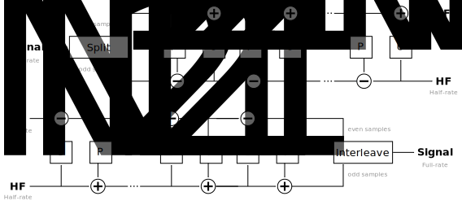
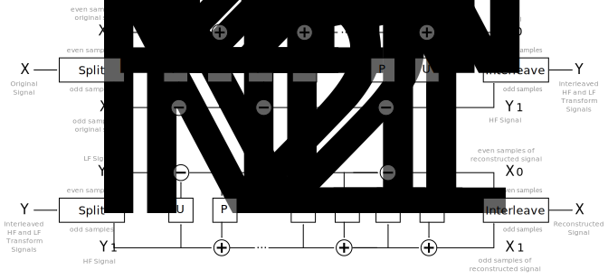
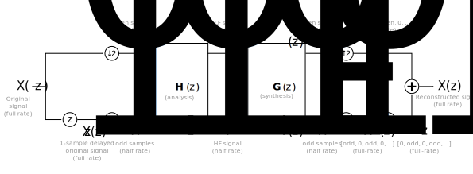
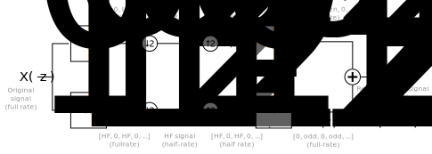
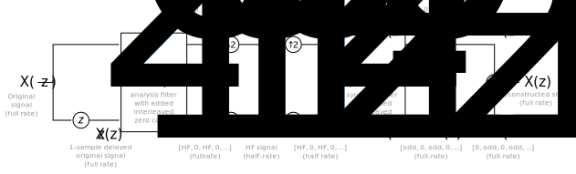
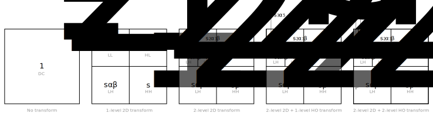

Derivation & Implementation¶
The (heavily annotated) vc2_quantisation_matrices module implements
the procedure required to compute quantisation matrices for arbitrary
combinations of VC-2 filters and transform depths.
If you’re not interested in the details, you can skip directly to the
convenience function for computing noise-power normalising quantisation
matrices: derive_quantisation_matrix().
Motivation/background¶
VC-2 achieves lossy compression by quantizing wavelet transform coefficients. This quantisation introduces errors (noise) into the transformed signal. When a picture is later synthesised from these transform values, this picture too will have added noise.
The transformed signal is broken up into several individual bands, approximately corresponding to different spatial frequency components. Noise added to each of these bands has a differing effect on the final picture. Depending on the specific filter in use, a certain amount of noise added in one band may have a greater impact on the final picture than the same noise added to a different band.
As a result, a uniform source of noise (e.g. quantisation) can result in a skewed distribution of noise in the resulting picture (e.g. excessive low- or high-frequency noise with little in other spatial frequencies). This is undesirable since the noise level at some spatial frequencies will become much higher than it otherwise would be.
VC-2’s quantisation matrices allow the quantisation levels in different transform bands to be adjusted relative to each other. In this way, for example, bands which are very sensitive to noise can be assigned lower quantisation levels than bands which are relatively insensitive.
The default quantisation matrices provided with VC-2 are chosen such that quantisation noise results in noise which is evenly spread across the frequency spectrum in the synthesised picture. It is the calculation of these matrices which is the focus of this module.
It is worth emphasising that the default quantisation matrices are not intended to exploit psycho-visual phenomena (for example by preserving low-frequency components at the expense of higher frequencies). VC-2 users are free to define custom quantisation matrices which exploit these phenomena if required, but this will not be discussed further here.
Implementation¶
This module performs all of the necessary steps required to compute quantisation matrices for VC-2’s wavelet filters. Internally the SymPy computer algebra system is used for all calculations. This means that all operations are carried out symbolically in much the same way they would be performed on paper.
Filter noise gain¶
The noise-gain of a FIR filter with coefficients \(h_1\), …, \(h_m\) is:
This figure indicates the gain the filter will introduce to a white-noise signal. This function is implemented as:
-
fir_filter_noise_gain(coefficients)¶ Compute the noise-gain of a FIR filter with the specified list of filter coefficients.
If we make the (mostly reasonable) assumption that quantisation introduces
white noise, it is the filter noise gains (of the synthesis wavelet filters)
which our quantisation matrix must attempt to even out. To be able to do this
we need to find the FIR filter coefficients which are to be fed to
fir_filter_noise_gain().
From lifting to classical filters¶
For reasons of efficiency and perfect reconstruction, the VC-2 wavelet filters are specified in terms of lifting operations:
This figure shows both the analysis (picture to transform coefficients) and synthesis (transform coefficients to picture) filtering processes. Both filters are defined by \(N\) update (\(U_n\)) and predict (\(P_n\)) stages which operate on sub-sampled signals. In most (but not all) of the VC-2 filters, only a single predict and update pair is used (i.e. \(N = 1\)).
By contrast, the fir_filter_noise_gain() function requires our filters
to be defined as classical Finite Impulse Response (FIR) filters. That is, we
must transform the picture above into the one below:
Matrix form¶
The first step in transforming the lifting filter representation into classical form is producing a matrix representation for the lifting procedure.
In this section we’ll use the \(z\)-domain representation of all the filters and signals involved. (See section 7.1 in “Ripples in Mathematics” for a targeted, whirl-wind introduction.)
The figure below shows the lifting representation of the analysis (top) and synthesis (bottom) filters again, additionally labelled according to the convention used here:
Using a \(z\)-domain representation then our picture signal, \(X(z)\), is split into even (\(X_0(z)\)) and odd (\(X_1(z)\)) samples:
Likewise the transform signal is made up of a Low Frequency (LF) component, \(Y_0(z)\) and a High Frequency (HF) component \(Y_1(z)\). We define \(Y(z)\) to be an interleaving of these two signals where the LF component makes up the even samples and the HF component the odd samples:
The resulting \(z\)-domain matrix forms of the analysis and synthesis lifting processes respectively are:
Where \(U_n(z)\) and \(P_n(z)\) are the \(z\)-transform representations of the lifting step filters. These functions can be found for a given wavelet transform using:
-
lifting_stage_to_z_transform(stage)¶ Given a
vc2_data_tables.LiftingStagedescribing wavelet filter stage, return the type of lifting stage (either predict or update) and a \(z\)-domain representation of the filtering operation as used in the matrix filter representation.- Parameters
- Returns
- stage_type
StageType - z_transform
- stage_type
-
class
StageType(value)¶ Lifting stage type specifier.
If the left-most parts of the above matrices are multiplied together into \(2 \times 2\) matrices: \(\textbf{H}(z)\) (the analysis filter in matrix form) and \(\textbf{G}(z)\) (the synthesis filter in matrix form) yielding:
For the analysis filter and synthesis filters respectively.
The following function may be used to convert a
vc2_data_tables.LiftingFilterParameters into a \(2 \times 2\)
matrix.
-
wavelet_filter_to_matrix_form(lifting_filter_parameters)¶ Convert a
vc2_data_tables.LiftingFilterParametersfilter specification into \(z\)-domain matrix form.
Note
All of the wavelet specifications in the VC-2 specification (and therefore
in vc2_data_tables.LIFTING_FILTERS) define synthesis
filter lifting stages. As suggested by the figures above, these are easily
converted into analysis filter specifications by reversing the order and
changing the operation. The following function may be used to convert
between analysis and synthesis lifting filters:
-
convert_between_synthesis_and_analysis(lifting_filter_parameters)¶ Given a synthesis wavelet filter specification, return the complementary analysis filter (or visa versa).
- Parameters
- lifting_filter_parameters
vc2_data_tables.LiftingFilterParameters
- lifting_filter_parameters
- Returns
- lifting_filter_parameters
vc2_data_tables.LiftingFilterParameters
- lifting_filter_parameters
Matrix form to classical form¶
The matrix form representation achieved above implements the following (slightly more formally illustrated, this time) analysis/synthesis filtering processes:
In this new diagram, the ‘split’ and ‘interleave’ processes are shown in terms of their \(z\)-domain operations.
From the matrix based representation (where our filters are defined by the matrices \(\textbf{H}(z)\) (analysis) and \(\textbf{G}(z)\) (synthesis) we now wish to decompose this into the classical form below:
In this representation, the analysis filter is defined by \(H_0(z^2)\) and \(H_1(z^2)\) and synthesis filter is defined by \(G_0(z^2)\) and \(G_1(z^2)\).
Note
For those new to the \(z\)-transform, for some signal \([a_0, a_1, a_2, \ldots]\), whose \(z\)-transform is \(A(z) = a_0 z^{0} + a_1 z^{-1} + a_2 z^{-2} + \ldots\) then \(A(z^2) = a_0 z^{0} + a_1 z^{-2} + a_2 z^{-4} + \ldots\) which is equivalent to a signal \([a_0, 0, a_1, 0, a_2, 0, \ldots]\).
Full-rate filter matrix¶
The first step is to modify the \(\textbf{H}(z)\) and \(\textbf{G}(z)\) filters to work on full-rate signals (i.e. to move the decimation step after analysis or before synthesis, as illustrated below:
The modification is straight-forward – the filter coefficients are interleaved with zeros; yielding the filters \(\textbf{H}(z^2)\) and \(\textbf{G}(z^2)\) for the analysis and synthesis stages respectively.
If we ignore the decimation and upsampling steps in the diagram above (which now directly cancel eachother out) we get the following matrix representation:
These can be written in expanded form like so:
Deriving the classical analysis filter¶
Rewriting the matrix form of the analysis filter as two equations and rearranging:
This leads us to the following expressions for the classical analysis filter representations:
Deriving the classical synthesis filter¶
Next, we repeat the same process of producing a formulaic representation of the matrix equation:
In the diagrams we have defined \(X(z) = X_0(z^2) + z^{-1} X_1(z^2)\). Substituting the formulae above into this expression and then rearranging we get:
From this we get the following expressions for the classical filter bank representation.
Implementation¶
The steps above which convert from the matrix representation of a filter to classical filters are implemented as:
-
analysis_matrix_to_classical_form(H)¶ Given an analysis filter matrix, \(\textbf{H}(z)\) as produced by, e.g.
wavelet_filter_to_matrix_form(), return the equivalent pair of classical filters, \(H_0(z^2)\) and \(H_1(z^2)\).
-
synthesis_matrix_to_classical_form(G)¶ Given an synthesis filter matrix, \(\textbf{G}(z)\) as produced by, e.g.
wavelet_filter_to_matrix_form(), return the equivalent pair of classical filters, \(G_0(z^2)\) and \(G_1(z^2)\).
The filter coefficients can then be extracted from the resulting algebraic expressions using
-
z_to_coeffs(poly)¶ Get a dictionary
{delay: coeff, ...}from a z-transform expressed as a polynomial.The returned dictionary will contain
intdelayvalues and SymPy expressions for the coefficients.
The resulting coefficients may then finally be passed to
fir_filter_noise_gain() to determine the filter noise gain for that
filter.
Convenience function¶
A convenience function is provided which carries out all of the above steps for synthesis filters, yielding the low-pass band synthesis filter noise gain (\(\alpha\)) and high-pass band synthesis filter noise gain (\(\beta\)).
-
wavelet_filter_to_alpha_beta(synthesis_lifting_filter_parameters)¶ Given synthesis filter definition (in a
vc2_data_tables.LiftingFilterParameters) return the low-pass and high-pass filter noise gains (\(\alpha\) and \(\beta\)).
Computing quantisation matrices¶
The \(\alpha\) and \(\beta\) values found by
wavelet_filter_to_alpha_beta() may now be used to create the
quantisation matrices for a given transform.
During the VC-2 2D wavelet transform, the filtering process is applied recursively. The consequence of this is that the noise gains accumulate (multiplicatively). This is illustrated below:
The \(s\) term is the scaling factor due to the bit shift used by VC-2 between every transform layer. This scaling factor is simply:
And is computed by:
-
wavelet_filter_to_synthesis_bit_shift_scale(synthesis_lifting_filter_parameters)¶ Given synthesis filter definition (in a
vc2_data_tables.LiftingFilterParameters) return the scaling factor, \(s\), imposed after each 2D or horizontal-only transform level.
Note
When an asymmetric transform is used, the bit shift for the horizontal
transform is used (see filter_bit_shift (15.4.2)).
The weighting of \(\alpha\), \(\beta\) and \(s\) for all bands and levels may be computed automatically using:
-
accumulated_noise_gains(alpha_v, beta_v, alpha_h, beta_h, s, dwt_depth, dwt_depth_ho)¶ Compute the total accumulated noise gain for all bands of a given wavelet transform.
- Parameters
- alpha_v, beta_v
The LF and HF filter noise gains for the vertical wavelet synthesis filter (from, e.g.
wavelet_filter_to_alpha_beta()).- alpha_h, beta_h
The LF and HF filter noise gains for the horizontal wavelet synthesis filter (from, e.g.
wavelet_filter_to_alpha_beta()).- s
The scaling applied by the bit-shift of the horizontal wavelet synthesis filter.
- dwt_depth, dwt_depth_ho
The wavelet transform depth (and horizontal-only transform depth).
- Returns
- {level: {band: noise_gain, …}, …}
A list with one dictionary per level in the same layout as the quantisation matrices in
vc2_data_tables.QUANTISATION_MATRICES.
The objective of the quantisation matrix is for quantisation to have the same
impact on every band. As such we only care about the relative noise gains. The
noise gains computed by accumulated_noise_gains() can be normalised
using:
-
normalize_noise_gains(noise_gains)¶ Normalize a set of noise gains such that the minimum gain is 1.
This operation will be performed symbolically and the resulting noise gains will be SymPy values.
In principle, the values returned by normalize_noise_gains() should be
used to scale the quantisation factors used for each frequency band. In
practice, VC-2 specifies quantisation factors via exponential quantisation
indices:
Therefore, the best approximation to the desired scaling factor is achieved by subtracting from the quantisation index:
This conversion is performed by:
Convenience function¶
A convenience function, derive_quantisation_matrix(), is provided
which carries out the entire process described above.